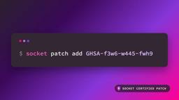

Socket
フィード

Free Certified Patch for Critical Rails Active Storage Vulnerability
Socket
Socket has released a free Certified Patch for a critical Rails Active Storage vulnerability, giving developers time to upgrade to a secure Rails version.
17時間前

Shai-Hulud Descendant Surfaces in Malicious Ruby Gem That Steals Credentials and Poisons AI Tools
Socket
A malicious Ruby gem runs a credential-stealing worm during installation, poisons AI coding tools, and can wipe files when a stolen GitHub token is revoked.
21時間前
GitHub to Block pull_request_target Workflows by Default Starting December 2
Socket
GitHub is tightening GitHub Actions security with new restrictions on privileged pull request workflows. Here's what changes and how maintainers are affected.
2日前

Hardening GitHub Actions Against Outside Threats
Socket
A practical guide to securing GitHub Actions against supply chain attacks, covering malicious pull requests, credential theft, dependency risks, and release pipelines.
4日前
Composer 2.11 Adds Dependency Cooldowns
Socket
Composer 2.11 adds dependency cooldowns, joining package managers that delay new releases to reduce supply chain risks while allowing urgent security updates.
4日前
Cursor Removes Malicious Claude Code 2.1.313 Extension From Its Marketplace
Socket
Cursor removed a malicious Claude Code 2.1.313 extension from its marketplace. Socket examines registry records and the initial claims about its distribution.
8日前
OpenCode User Hit with Hostile Backlash After Reporting Free AI Loophole
Socket
An OpenCode user faced harassment after reporting a free AI usage loophole, drawing a bitter backlash in a GitHub thread that has since been deleted.
9日前
Searchjacked: Hidden Browser Extensions Hijack Searches for 13 Million Users
Socket
319 browser extensions installed by 13.4 million users hijack searches, capture queries, and collect referral payments from Yahoo and Bing.
9日前
Malicious Firefox Extensions Impersonate Phantom, Jupiter, and Bitget to Steal Wallet Secrets
Socket
Malicious Firefox extensions mimic Phantom, Jupiter, and Bitget wallets to steal recovery phrases and private keys, with one fetching its payload remotely.
11日前
Socket Threat Intel Now Shows Which Malware Campaigns Were Blocked or Detected
Socket
Socket Threat Intel now shows which malware campaigns were blocked or detected in your organization, with links to scans and Firewall events.
12日前